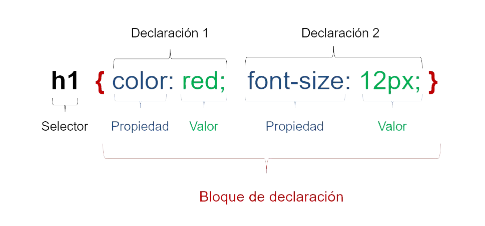
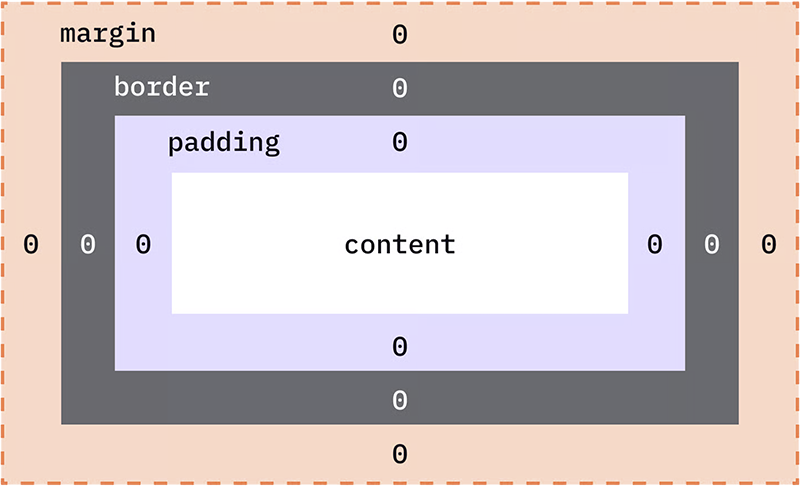
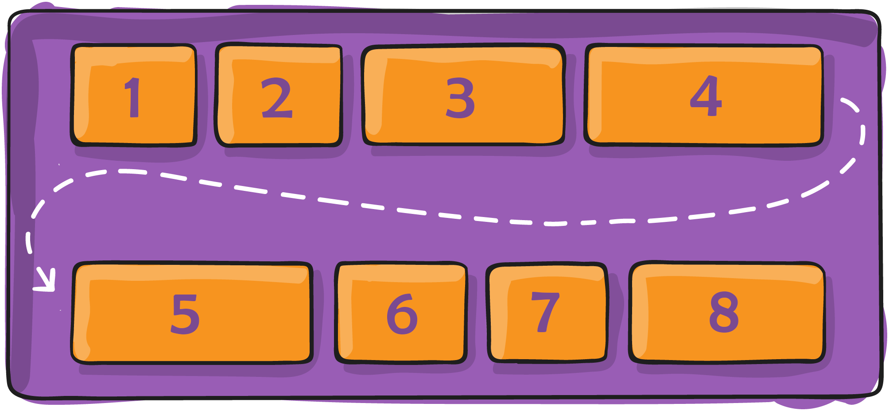
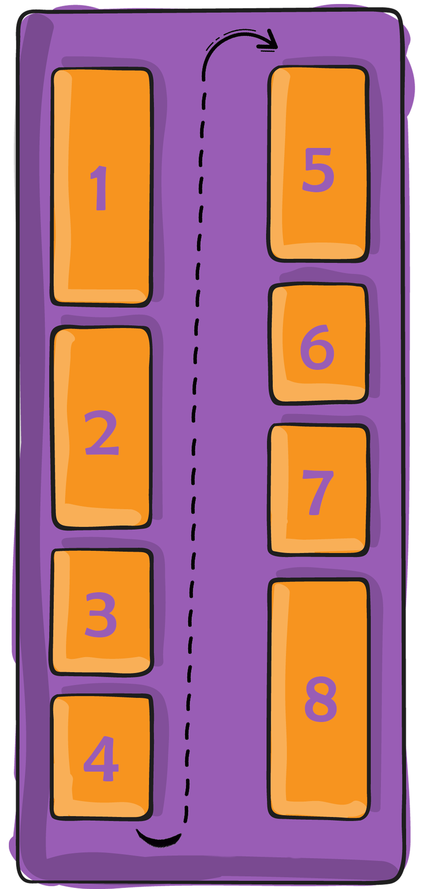
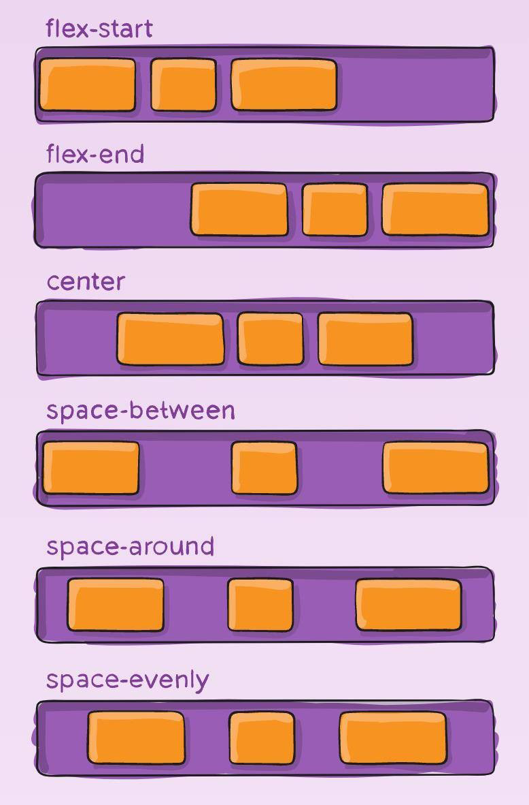
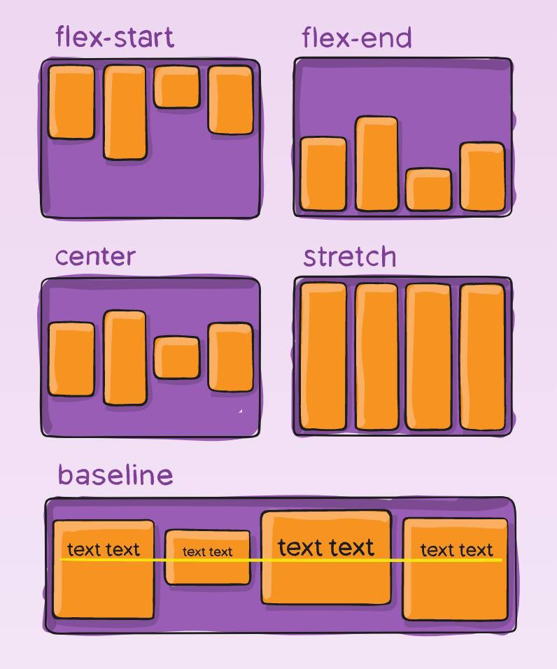
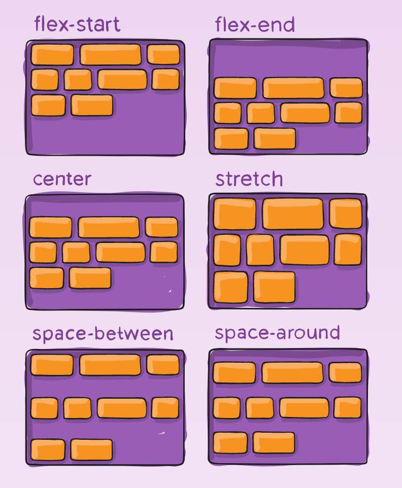

Medidas
Porcentaje: %
El símbolo % representa una medida relativa al tamaño del elemento contenedor.
Es muy útil para crear diseños flexibles y responsivos, ya que el tamaño del elemento cambia automáticamente cuando el contenedor se redimensiona.
Pixel: px
La unidad px significa píxel, y representa una medida absoluta basada en el punto más pequeño que puede mostrarse en la pantalla.
Es ideal para obtener precisión visual, aunque no es adaptable a diferentes pantallas o configuraciones de accesibilidad.
Medida Relativa: em
La unidad em se usa para definir medidas relativas al tamaño de fuente del elemento padre.
Es muy útil para lograr proporciones coherentes en tipografía y espaciados, aunque puede acumularse en elementos anidados.
Ancho Pantalla Visible: vw
La unidad vw significa ancho del viewport, es decir, un porcentaje del ancho visible de la ventana del navegador.
Es perfecta para diseños fluidos, ya que el tamaño se adapta automáticamente al cambiar el tamaño de la ventana o al visualizar la página en distintos dispositivos.
Altura Dinámica Visible: dvh
La unidad dvh representa la altura dinámica visible del viewport, adaptándose a los cambios que ocurren en pantallas móviles (como cuando aparece el teclado o se oculta la barra de navegación).
Selectores

Selector Universal
{ font-family: arial; }
Explicación: su uso no es habitual, pero se puede utilizar para aplicar propiedades a todas las etiquetas utilizadas en una página.
Selector de Etiqueta
li { font-size: 0.9em; }
Selector de Clase
.contamarillo { font-weight: bold; }
Selector de Identificación
#capa1 { width: 90%; }
Sel. Jerarquía
Dentro de una Clase
.contamarillo li { color: blue; font-family: arial; }
Explicación: Se selecciona para establecer estilo a los elementos 'li' de la clase 'contamarillo'.
Dentro de una Clase perteneciente a un Identificador
#contenedor1 .contamarillo li { color: blue; font-family: arial; }
Explicación: se selecciona para establecer estilo a los elementos 'li' de la clase 'contamarillo' que están dentro del contenedor con identificador 'contenedor1'.
Sel. Grupo
p, li { color: blue; font-family: arial; }
Explicación: los selectores se separan por comas, permitiendo en este ejemplo establecer estilos a todos los párrafos 'p' y los elementos 'li'.
p, #contenedor1 .contamarillo li { color: blue; font-family: arial; }
Explicación: los selectores se separan por comas, permitiendo en este ejemplo establecer estilos a todos los párrafos 'p' y los elementos 'li' que pertenecen a la clase 'contamarillo' dentro del contenedor con identificador 'contenedor1'.
Colores
Nombre del Color
p { color: yellow; }
Valor Hexadecimal
p { color: #FFFFFF; }
RGB (Valores del 0 al 255 en cada color)
p { color: rgb(47, 170, 170); }
RGBA (Valores del 0 al 255 en cada color) con canal alfa (Valores entre 0 y 1)
p { color: rgba(252, 245, 109, 0.7); }
Explicación: la 'R' se refiere a la intensidad del color rojo, la 'G' a la intensidad del color verde, la 'B' a la intensidad del color azul y la 'A' (canal alfa) al nivel de transparencia.
Formato de Fuente
Color de Letra
p { color: green; }
Tipo de Letra
p { font-family: arial; }
Tamaño de Letra (px, em, %,...)
p { font-size: 0.9em; }
Negrita
p { font-weight: bold; }
Cursiva
p { font-style: italic; }
Letras minúsculas en Versalitas (Mayúsculas + pequeñas)
p { font-variant: small-caps; }
Convertir todas las letras a MAYÚSCULAS
p { text-transform: uppercase; }
Convertir todas las letras a minúsculas
p { text-transform: lowercase; }
Primera Letra de cada palabra en MAYÚSCULA
p { text-transform: capitalize; }
Explicación: se pueden aplicar en etiquetas de párrafos, títulos, listas, tablas, contenedores, ...
Rayados
Normal (Subrayado)
p { text-decoration: underline; }
Rayado por encima del texto
p { text-decoration: overline; }
Tachado
p { text-decoration: line-through; }
Ninguno
p { text-decoration: none; }
Explicación: habitualmente se utilizan el rayado normal (subrayado) y el tachado.
La opción 'none' se aplica a las etiquetas <a href=""> </a> para quitar la línea que aparece cuando se crea un hipervínculo (enlace).
Sombreado
Sombreado en un Texto
h1 { text-shadow: 3px 3px 2px black; }
Sombreado en una Caja
div { box-shadow: 3px 3px 2px grey; }
Explicación: se utilizan para establecer sombras a un texto o caja. El 'primer parámetro' corresponde a la franja horizontal (sombra hacía abajo), el 'segundo parámetro' a la franja vertical (sombra hacía la derecha), el 'tercer parámetro' al difuminado (intensidad de menor a mayor) y el 'cuarto' al color del sombreado.
Los tres primeros parámetros utilizan como unidad de medida el pixel. Si en los 'dos primeros' parámetros se utilizan medidas negativas estas se aplican de manera inversa, es decir sombra hacía arriba (primer parámetro) y/o sombra hacía la izquierda (segundo parámetro).
Formato Textos
Alineación de Texto
h2 { text-align: center; }
Espacio entre Letras
h2 { letter-spacing: 5px; }
Espacio entre Líneas
p { line-height: 6px; }
Sangría de Primera Línea
p { text-indent: 30px; }
Explicación: estas propiedades se pueden aplicar en todas aquellas etiquetas que vayan a contener texto (títulos, párrafos, ...).
Modo de Escritura
p { writing-mode: vertical-lr; }
Explicación: esta propiedad define la dirección principal del texto (cómo se colocan las líneas) y la dirección del bloque (cómo se apilan las líneas).
Posibles Valores
- vertical-lr: escritura de izquierda a derecha.
- vertical-rl: escritura de derecha a izquierda.
- horizontal-tb (modo por defecto).
Orientación de los Caracteres
p { text-orientation: upright; }
Explicación: controla cómo se escriben los caracteres dentro de una línea vertical.
Sólo tiene efecto cuando se usa la propiedad 'writing-mode' con los valores verticales.
Ancho y Alto
Ancho
div { width: 90%; }
Ancho Máximo deseado
div { max-width: 250px; }
Alto
div { height: 500px; }
Alto Máximo deseado
div { max-height: 500px; }
Explicación: las propiedades de alto (height) y ancho (width) en CSS se pueden aplicar fundamentalmente a capas contenedoras, imágenes, vídeos o áreas de texto.
Las propiedades max-width (ancho máximo) o max-height (alto máximo) se utilizan para indicar un ancho o alto máximo siempre que el contenedor o la ventana lo permita.
Hay que tener especial cuidado con el uso de la propiedad 'height' para que el contenedor no se vea superado por textos, imágenes u otros objetos incluidos en estas capas.
También hay que prestar especial atención en las imágenes o vídeos cuando se quiere aplicar 'height' de forma combinada con 'width', ya que puede provocar un aumento o reducción 'no proporcional' del tamaño de ese tipo de contenido multimedia.
Márgenes

p { margin: 3px 2px 4px 5px; }
Explicación: cuando aparecen cuatro parámetros los márgenes se aplican en el siguiente orden: arriba, derecha, abajo e izquierda.
Cuando aparecen tan sólo dos parámetros el primero es referido a los márgenes superior e inferior y el segundo parámetro a los márgenes derecho e izquierdo.
Si aparece un sólo parámetro, la cantidad se aplica a todos los lados del contenedor.
Posición de los Márgenes
- Superior: div { margin-top: 2px; }
- Inferior: div { margin-bottom: 2px; }
- Izquierdo: div { margin-left: 2px; }
- Derecho: div { margin-right: 2px; }
Alineación Centrada con Márgenes
div { margin: 0 auto; }
Explicación: cuando se aplican los parámetros '0' y 'auto' conjuntamente en un contenedor, este se alinea en el centro con respecto a su contenedor padre (se recomienda que el 'padre' tenga un ancho definido).
Bordes
Bordes en todo el contenedor
p { border: 1px solid black; }
Explicación: el primer parámetro indica el grosor, el segundo parámetro el tipo de borde y el tercer parámetro el color del borde.
Tipos de Bordes
- Solido: div { border: 1px solid; }
- Punteado: div { border: 2px dotted; }
- Doble: div { border: 3px double; }
- Línea Discontinua: div { border: 2px dashed; }
Posición de los Bordes
- Superior: div { border-top: 1px solid; }
- Inferior: div { border-bottom: 2px dotted; }
- Izquierdo: div { border-left: 3px double; }
- Derecho: div { border-right: 2px dashed; }
Bordes Redondeados
div { border-radius: 3px 3px 4px 5px; }
Explicación: el primer parámetro indica el borde superior izquierdo, el segundo parámetro el borde superior derecho, el tercer parámetro el borde inferior derecho y el cuarto parámetro el borde inferior izquierdo.
Si sólo se muestran dos parámetros el primer parámetro indica los bordes superior izquierdo e inferior derecho, y el segundo parámetro el borde superior derecho y el borde inferior izquierdo.
Si sólo se muestra un parámetro, este se aplica a todos los bordes.
Bordes sin sobresalir
li { box-sizing: border-box; }
Explicación:
la propiedad 'box-sizing' con el dato
'border-box' hace que los bordes
crezcan hacía dentro y no hacía afuera.
Rellenos
Rellenos en todo el contenedor
h3 { padding: 1px 2px 4px 3px; }
Explicación: el primer parámetro se aplica al relleno entre el contenedor y el borde superior, el segundo parámetro se aplica al relleno entre el contenedor y el borde derecho, el tercer parámetro se aplica al relleno entre el contenedor y el borde inferior y el cuarto parámetro al relleno entre el contenedor y el borde izquierdo.
Si se mostraran dos parámetros, el primero se aplicaría al relleno entre el contenedor y los bordes superior e inferior, mientras el el segundo se aplicaría al relleno entre el contenedor y los bordes derecho e izquierdo.
Si sólo aparece un parámetro, este se aplica a todo el relleno entre el contenedor y los bordes.
Rellenos concretos
- Superior: li { padding-top: 2px; }
- Inferior: li { padding-bottom: 2px; }
- Izquierdo: li { padding-left: 2px; }
- Derecho: li { padding-right: 2px; }
Fondos
Color de Fondo
div { background-color: blue; }
Degradado Lineal
div { background: linear-gradient(to right, blue 50%, white 50%); }
Explicación: el primer parámetro indica la dirección a seguir, el segundo parámetro el primer color y el porcentaje que ocupa y el tercer parámetro el segundo color y el porcentaje que ocupa.
Se pueden utilizar tanto posiciones como grados para las direcciones del degradado.
- to right = 90deg
- to left = 270deg
- to bottom = 180deg
- to top = 0deg
No es necesario el uso de porcentajes para conseguir un difuminado de colores, bastando solo con indicar la posición de inicio y los colores a fundir.
Degradado Radial
div { background-color: radial-gradient(ellipse at center, blue 50%, white 50%); }
Explicación: el primer parámetro indica la opción y la posición de inicio, el segundo parámetro el primer color y el porcentaje que ocupa y el tercer parámetro el segundo color y el porcentaje que ocupa.
Tipos de Degradado
Posición de Inicio
- at center
- at right
- at left
- at bottom
- at top
Imagen de Fondo
div { background-image: url("img/pantersa-rosa.png"), url("img/gato.jpg"); }
Explicación: será necesario incluir la ruta donde se encuentra alojada la imagen. Se pueden incluir varias imágenes separando las rutas de los archivos por comas.
Tamaño de la Imagen de Fondo
div { background-size: 40%, 50px; }
Explicación: lo más habitual es dimensionarlo por porcentajes o por el ancho medido en píxeles (px). Si se han incluido más imágenes, se separan sus tamaños por comas.
Posición de la Imagen de Fondo
div { background-position: top left, 50px 30px; }
Explicación: se pueden utilizar las posiciones top (superior), bottom (inferior), left (izquierda), right (derecha) o combinaciones lógicas de las mismas. Si se han incluido varias imágenes de background, los datos de sus posiciones se separan por comas.
También se pueden meter coordenadas cartesianas 'x' e 'y' en píxeles (px) para fijar la posición de la imagen.
Repetición de la Imagen de Fondo
div { background-repeat: no-repeat, repeat-y; }
Explicación: si la imagen no ocupa todo el contenedor, esta se repetirá indefinidamente hasta cubrirlo; por este motivo es necesario establecer un dato entre los que encontramos 'no-repeat' (que no se repita), 'repeat-x' (repetir horizontalmente) o 'repeat-y' (repetir verticalmente). Si se han incluido más imágenes, se separan los datos de repetición por comas.
Fijar la Imagen de Fondo
div { background-attachment: fixed; }
Explicación: esta propiedad junto con el dato 'fixed', fija el contenido del background en la pantalla visible.
Tablas
Separación entre celdas
table { border-collapse: collapse; }
table { border-spacing: 10px; }
Explicación: la propiedad border-collapse con el dato 'collapse' suprime el espacio entre celdas.
Si se utiliza la propiedad border-spacing se puede aplicar un espacio determinado entre celdas.
Alineación Horizontal
table { vertical-align: top; }
Explicación: las tablas pueden alinearse con respecto a su contenedor en las posiciones left (izquierda), center (centro) y right (derecha).
Esta propiedad también se puede aplicar en las celdas (td o th) y en las filas (tr).
Alineación Vertical
td { vertical-align: top; }
Explicación: las celdas pueden alinear verticalmente su contenido en las posiciones 'top' (arriba), 'middle' (centro) y 'bottom' (abajo).
Listas
Cambiar Viñetas en las Listas UL
- Círculo Sólido: ul { list-style-type: disc; }
- Círculo Hueco: ul { list-style-type: circle; }
- Cuadrado: ul { list-style-type: square; }
- Sin Viñetas: ul { list-style-type: none; }
Cambiar Numeración en las Listas OL
- Decimal: ol { list-style-type: decimal; }
- Romanos MAYÚSCULAS: ol { list-style-type: upper-roman; }
- Romanos minúsculas: ol { list-style-type: lower-roman; }
- Letras MAYÚSCULAS: ol { list-style-type: upper-alpha; }
- Letras minúsculas: ol { list-style-type: lower-alpha; }
- Sin numeración: ol { list-style-type: none; }
Incluir una imagen personalizada como viñeta
ul { list-style-image: url("img/icon.png"); }
Explicación: esta propiedad se puede aplicar tanto en las etiquetas 'ul' y 'ol' como en la etiqueta 'li' referida a cada elemento de la lista.
Posición de la Viñeta en el contenido
ul { list-style-position: inside; }
Explicación: tanto las viñetas como la numeración se pueden colocar dentro del bloque con 'inside' o fuera del bloque (por defecto) con 'outside'.
Listas Horizontales
Propiedad Float
li { float: left; }
Explicación: si se opta por utilizar esta propiedad se recomienda aplicarla en los elementos 'li'.
Propiedad Display
li { display: inline; }
Explicación: si se utilizan los datos 'inline' o 'inline-block' se recomienda aplicarlo en los elementos 'li'. Si se usa el dato 'flex', se aplica directamente en la etiqueta 'ul'.
Pos. Flotante
Propiedad Float (Imagen)
img { float: left; }
Explicación: esta propiedad actualmente se utiliza para hacer flotar imágenes por encima de un texto. Si se pone el dato 'left' la imagen flota a la izquierda, mientras que con el dato 'right' la imagen flota a la derecha.
Propiedad Clear (Texto)
p { clear: both; }
Explicación: se utiliza para indicar que un texto concreto no flote con respecto a una imagen cuya propiedad flotante está activada.
Pos. Absoluto
#capa1 { position: absolute; top: 20px; right: 50px; }
Explicación: se utiliza cuando se quiere posicionar un texto con respecto a un 'padre'. Es necesario indicar con las propiedades 'top' o 'bottom' y/o 'left' o 'right' la posición que se desea (en píxeles).
Posicionamiento del Contenedor Padre
Si el 'padre' no tiene posicionamiento establecido, se acude al inmediamente superior.
Si ningún 'padre' tiene posicionamiento, el contenedor se posiciona con respecto al BODY.
Pos. Relativo
Contenedor Padre
#capa1
{ position: relative; top: 20px; right: 50px; }
Contenedor Hijo
#capa1-1
{ position: absolute; bottom: 10px; left: 20px; }
Explicación: el contenedor se posiciona de manera absoluta con respecto al 'padre' (este cuenta con posicionamiento relativo).
El 'padre' no requiere de manera obligatoria la inserción de los píxeles (px) de posición.
Propiedades Capas
Prioridad en las Capas
section { z-index: 8; }
article { z-index: 10; }
Explicación: es muy habitual su aplicación cuando se utiliza posicionamiento absoluto y/o relativo. Permite en el caso de capas superpuestas, que aquellas que tengan una numeración más alta posean prioridad a la hora de mostrarse en pantalla.
Desborde de contenido
div { overflow: hidden; }
Desborde de contenido en el Eje X
div { overflow-x: hidden; }
Desborde de contenido en el Eje Y
div { overflow-y: auto; }
Valores + usados
- Hidden: corta el desborde de contenido.
- Auto: incluye barras de desplazamiento para ver el contenido desbordado.
Explicación: el valor 'hidden' dentro de la propiedad 'overflow' se utiliza de manera habitual cuando se incluyen imágenes y no se quiere que su tamaño supere la capa. Ejemplo de uso: Redondeo de bordes.
El valor 'auto' permite el uso de barras de desplazamiento para ver contenido que desborda la capa. Se puede utilizar en ambos ejes.
Propiedad Display
Block
div { display: block; }
Explicación: el elemento ocupa todo el ancho disponible del contenedor. Permite definir propiedades como 'width', 'height', 'margin', 'padding', ...
Inline
div { display: inline; }
Explicación: los elementos se muestran en línea unos con otros mientras haya ancho disponible. No permite establecer 'width' ni 'height'.
Inline-Block
div { display: inline-block; }
Explicación: los elementos se muestran en línea unos con otros mientras haya ancho disponible. Permite el uso de 'width' y 'height'.
None
div { display: none; }
Explicación: el elemento no se muestra ni ocupa espacio en la página. Se utiliza en FLEX RESPONSIVE para ocultar determinados elementos al adaptarse el contenido a la pantalla de dispositivos de diferentes tamaños.
Propiedad Visibility
Hidden
div { visibility: hidden; }
Explicación: oculta el contenedor o etiqueta en el que se aplica, sin permitir que se ocupe su hueco.
La diferencia sustancial con la propiedad 'display' es que 'visibility' no permite ocupar su espacio cuando el contendor se oculta, mientras que 'display' si lo permite porque realmente desactiva el contenedor.
Visible
div { visibility: visible; }
Explicación: visualiza el contenedor o etiqueta en el que se aplica.
El uso de la propiedad 'visibility' es muy habitual en contenido responsive para ocultar / visibilizar contenedores en función del tamaño de la pantalla.
FlexBox
Display: Flex
div { display: flex; }
Explicación: se utiliza para aplicar Flexbox, un modelo de diseño que permite alinear y distribuir espacio entre elementos dentro de un contenedor, incluso cuando su tamaño es desconocido o dinámico.
Cuando se aplica display: flex; a un contenedor, sus elementos hijos directos se convierten en elementos flexibles, dando un control más preciso sobre alineación (vertical y horizontal), tamaño proporcional, orden de los elementos y distribución de espacios disponibles.


Flex-Flow
div { flex-flow: row wrap; }
Explicación: se utiliza en FLEXBOX para determinar la dirección de los elementos (filas o columnas) y si los elementos deben ajustarse o no (wrap).
- flex-flow: row wrap
- Dirección: De izquierda a derecha.
- Ajuste de Contenido: nueva línea (abajo).
- flex-flow: row
- Dirección: De izquierda a derecha.
- Ajuste de Contenido: NO.
- flex-flow: column wrap
- Dirección: De arriba a abajo.
- Ajuste de Contenido: nueva columna (a la derecha).
- flex-flow: column
- Dirección: De arriba a abajo.
- Ajuste de Contenido: NO.
Ejemplo flex-flox: row wrap

Ejemplo flex-flox: column wrap

Alin. Eje Prim.
Justify-Content
div { justify-content: space-around; }
Explicación: se utiliza en FLEXBOX para alinear los elementos hijos a lo largo del eje principal del contenedor flexible.
Cuando el dato de la dirección es 'row' (de izquierda a derecha) el eje es horizontal. Esta opción es la más habitual.
Cuando el dato de la dirección es 'column' (de arriba a abajo) el eje es vertical.

Alin. Eje Sec.
Align-Items
div { align-items: flex-start; }
Explicación: se utiliza en FLEXBOX para alinear el contenido (los elementos hijos) a lo largo del eje secundario del contenedor flexible.

Align-Content
div { align-content: center; }
Explicación: se utiliza en FLEXBOX para alinear el conjunto de líneas a lo largo del eje secundario del contenedor flexible.

Cuando el dato de la dirección es 'row' (de izquierda a derecha) el eje secundario es vertical. Esta opción es la más habitual.
Cuando el dato de la dirección es 'column' (de arriba a abajo) el eje es secundario es vertical.
Espaciados
Gap
div { gap: 20px 10px; }
Explicación: se utiliza en
FLEXBOX para aplicar espacios
entre los contenedores hijos dentro del contenedor padre.
Si hay dos parámetros, el primero
indica el espacio entre filas y el segundo
el espacio entre columnas.
Si hay un sólo parámetro, este se aplica tanto
al espacio entre filas como entre columnas.
Row-Gap
div { row-gap: 20px; }
Explicación: se utiliza en
FLEXBOX para aplicar espacios
entre las filas de los contenedores hijos dentro del contenedor padre.
Column-Gap
div { column-gap: 20px; }
Explicación: se utiliza en
FLEXBOX para aplicar espacios
entre las columnas de los contenedores hijos dentro del contenedor padre.
Adaptación
Flex-Basis
article { flex-basis: 80%; }
Explicación: define el tamaño inicial de
un elemento flexible a lo largo del eje principal antes de que se distribuya el
espacio disponible entre los elementos flexibles.
Se utiliza en 'responsive' para aplicar el tamaño de cada contenedor
flexible cuando los tamaños de pantalla son distintos.
Order
div { order: 2; }
Explicación: la propiedad
'order' permite ordenar las capas cuando el contenedor
'padre' usa FLEXBOX.
Las capas 'hijas' pueden tener otro orden distinto en el archivo HTML.
Las capas con una numeración más baja tendrán prioridad en la colocación
que se mostrará en la pantalla.
Pseudo-Clases
Hover
#capa1 li:hover { color: white; background-color: blue; }
Explicación: se utiliza para aplicar estilos cuando el usuario pasa el cursor (ratón) sobre un elemento.
First-Line
#capa1 p:first-line { text-decoration: underline; }
Explicación: se utiliza para aplicar estilos a la primera línea de un texto seleccionado.
First-Letter
#capa1 p:first-letter { font-size: 1.2em; }
Explicación: se utiliza para aplicar estilos a la primera letra de un texto seleccionado.
MEDIA QUERYS
Responsive: @media
@media (min-width: 768px) { width: 50%; background-color: yellow; }
Explicación: se utiliza para cambiar propiedades de los objetos
en función del dispositivo que lo visualice.
Se recomienda diseñar la página primero para dispositivos más pequeños y posteriormente
a través del Responsive (@media) aplicar con min-width las diferentes propiedades (fundamentalmente tamaños).
Tamaños Responsive
- Pequeños Dispositivos: hasta 576px.
- Móviles: hasta 768px.
- Tablets: hasta 992px.
- Escritorios: hasta 1440px.
- Grandes Escritorios: a partir de 1440px.
Tipos de Letra: @font-face
@font-face { font-family: "mi-letra"; src: url("../fonts/gembul.otf"); }
Explicación: se utiliza para incorporar tipos de letra personalizados a una página web. Será necesario añadir un nombre para la fuente a través de la propiedad 'font-family' y una ruta para encontrar dicha fuente en nuestro alojamiento a través de la propiedad 'src'.
Otras Propiedades
Cursor
#capa1 li:hover { cursor: pointer; }
Explicación: se utiliza habitualmente para cambiar el cursor cuando este pasa por encima de un elemento determinado.
- Pointer: convierte el cursor en un puntero.
- Zoom-in: convierte el cursor en una lupa de aumento.
- Zoom-out: convierte el cursor en una lupa de reducción.
- url("ruta de la imagen"), auto: cursor personalizado.
Opacity
img { opacity: 0.5; }
Explicación: la propiedad 'opacity' se puede usar en cualquier elemento HTML que admita estilo visual, ya que afecta a la transparencia visual del elemento y su contenido. Se le pueden poner valores entre 0 y 1.
Transform
img { transform: scale(1.01); }
Explicación:
la propiedad 'transform' permite aplicar transformaciones visuales
a elementos HTML
- scale: escala porcentualmente un elemento.
img { transform: scale(1.03); }
- translate: mueve un elemento en 'x' e 'y'.
img { transform: translate(50px, 100px; }
- rotate: rota un elemento (en grados).
img { transform: rotate(45deg); }
- skew: deforma un elemento en 'x' e 'y' (en grados).
img { transform: skew(30deg 50deg); }
Todas las transformaciones a realizar en un selector se deben hacer introduciendo
sólo una vez la propiedad 'transform' y separando los datos de dichas transformaciones por comas.
Transition
img { transition: width 0.5s linear 1s; }
Explicación: se utiliza para hacer transiciones a nuevos
datos aportados por diferentes propiedades. El primer parámetro indica el dato
de la propiedad a modificar, el segundo parámetro la duración de la transición,
el tercer parámetro la forma y el cuarto parámetro el
retardo con el que se inicia la transición.
Todas las transiciones a realizar en un selector se deben hacer introduciendo
sólo una vez la propiedad 'transition' y separando los datos de dichas transiciones por comas.
El cambio a los nuevos datos de la propiedades se aplica con la
pseudo-clase 'hover'.
div { width: 200px; background-color: yellow; transition: width 0.2s linear 1s, background-color 0.3s linear 1s; }
div:hover { width: 400px; background-color: pink; }
NO HAY COINCIDENCIAS EN LA BÚSQUEDA